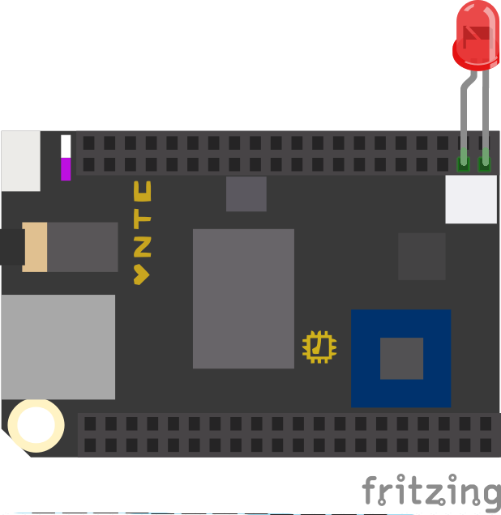

Make a LED blink using the Chip computer.
The Chip is a low-cost computing platform similar to the Raspbery Pi (Check in the Comments section for a discussion about the similarities and differences between the two). The Chip has built in wifi and runs linux. Since the Chip runs linux (and since there are good libraries), we can write all of our code in Python.
Next Thing Co. (NTC), the makers of the chip have created a great documentation page, that they will be adding to as the Chip and its software and libraries evolve. Check it out here. We also have a couple of NTC's Pocket Chips, which are a cool add on for the chip that gives you a portable, battery powered linux box with a built in screen. If you want to play around with one, talk to us.
ip addr show wlan0. The ip address will be on the "inet"
line. Next, on a computer connected to the same network as the chip you can ssh using the program of your choice. For PC,
check out Putty. For Mac, the ssh command is the easiest. Just open a terminal and type
ssh user_name@ip_address (ex: ssh chip@192.168.1.12). No matter how you ssh in,
you will need to use the username "chip" and the password "chip". If you plan to leave the chip connected to the internet
for extended periods of time, make sure to change this default password, or you may get hacked.
sudo apt-get update
sudo apt-get install python-smbus
git clone https://github.com/xtacocorex/Adafruit_Python_GPIO.git
cd Adafruit_Python_GPIO
sudo python3 setup.py install
The Chip and Raspberry Pi are both small computers that run Linux on an ARM processor. However, they both have advantages and disadvantages that you should take into account when deciding on which to use in your project. First up, cost: the Raspberry Pi is $30-$35 while the chip is only $9. You can borrow both for free from either IDeATe or the class supplies, but the cheaper price means that frying a board on accident has less of a consequence. Next, the camera: the Raspberry Pi has a great camera module that your can also borrow from IDeATe that makes computer vision fast and relatively painless. The chip does not have this. Finally, advantages for phys comp projects: The Chip is smaller than the Raspberry Pi. This, allong with the Chip's symetric headers make it nicer for embedding into a phys comp project than a Raspberry Pi. Additionally, the Chip has a plug for a LiPo battery, and it handles all of the charging for you, making adding a battery to your project fairly easy.
